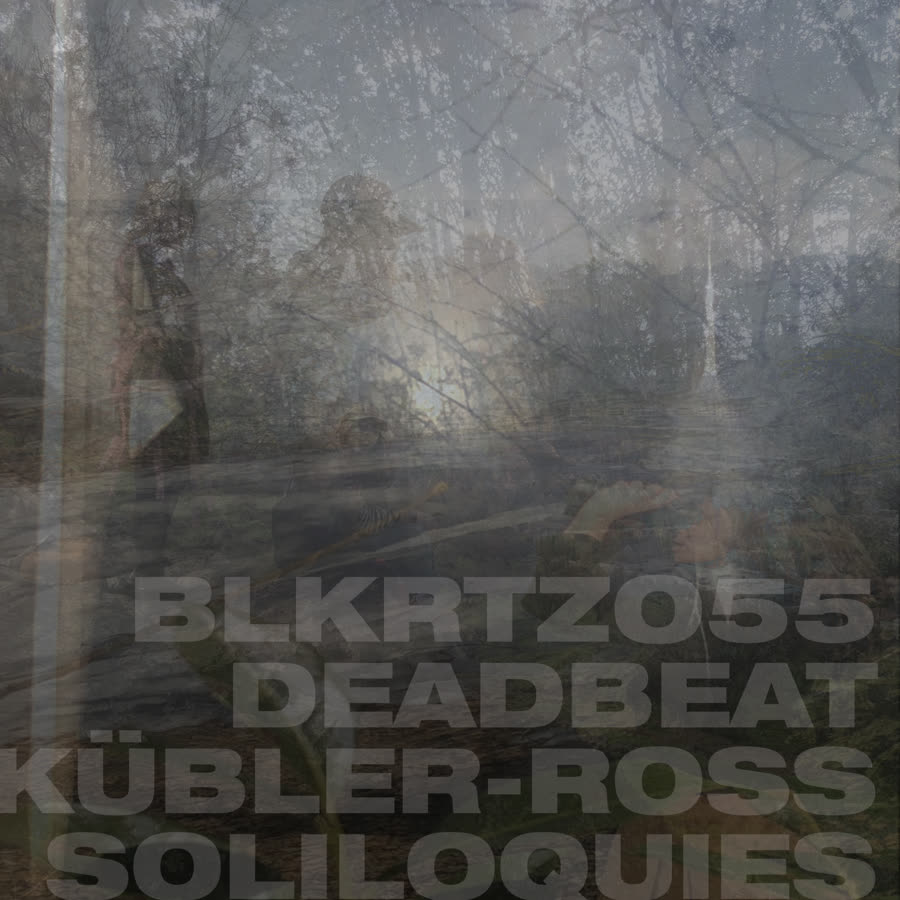

BLKRTZ label · Archive

BLKRTZ055
Deadbeat, Kübler-Ross Soliloquies
Deadbeat's first solo album in five years: a tightly dance-floor-focused record built around the five stages of grief in the Kübler-Ross model. Dub techno, dancehall, Detroit and Chicago energy, with guests Black Noble Oluokun and Romain Azzaro.
Ark Welders Guild, Mons Clepsydra
More from the Bandcamp
- The Lichen Diaries vol 2Scott Monteith
- The Lichen Diaries vol 1Scott Monteith
- NYE VERSIONS
- The Rumble and Drums of Things to Come
- Palmer in Dub (Deadbeat's Drug Chug Dubs)Deadbeat and RE-201
- Music for Interbeing
- ZinoviiOwen Ross
- The Double Bongcloud
- The MountainDeadbeat and Sa Pa
- Root, Stalk, Leaf, and BloomDeadbeat and Om Unit
- Rituals vol 1Deadbeat and Martin Bakero
- WOAH! WOAH!! WOAH!!!Deadbeat and Om Unit
- Deadbeat and the Mole Meet Gonzalo TorresDeadbeat, The Mole, Gonzalo Torres
Info
BLKRTZ is the home of Scott Monteith's work as Deadbeat, along with the BLKRTZ label.
Scott Monteith is a musician, sound artist and music technology educator best known for his work under the name Deadbeat. The Canadian-born, Berlin-based producer has released 11 Deadbeat albums and more than two dozen singles, on labels including Wagon Repair and Air Texture.
As a DJ he is a dub archivist, with a collection spanning early Jamaican roots through 80s and 90s UK and European dub to today's producers. His 2010 mix Radio Rothko was rated by Resident Advisor among others as one of the most genre-defining mix CDs. He has also led workshops for Red Bull Music Academy, Microsoft and Ableton.